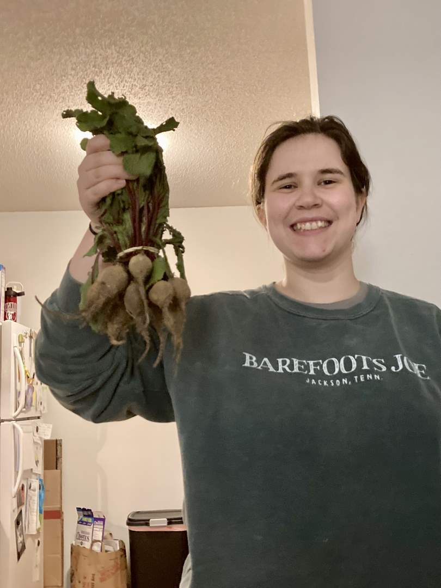
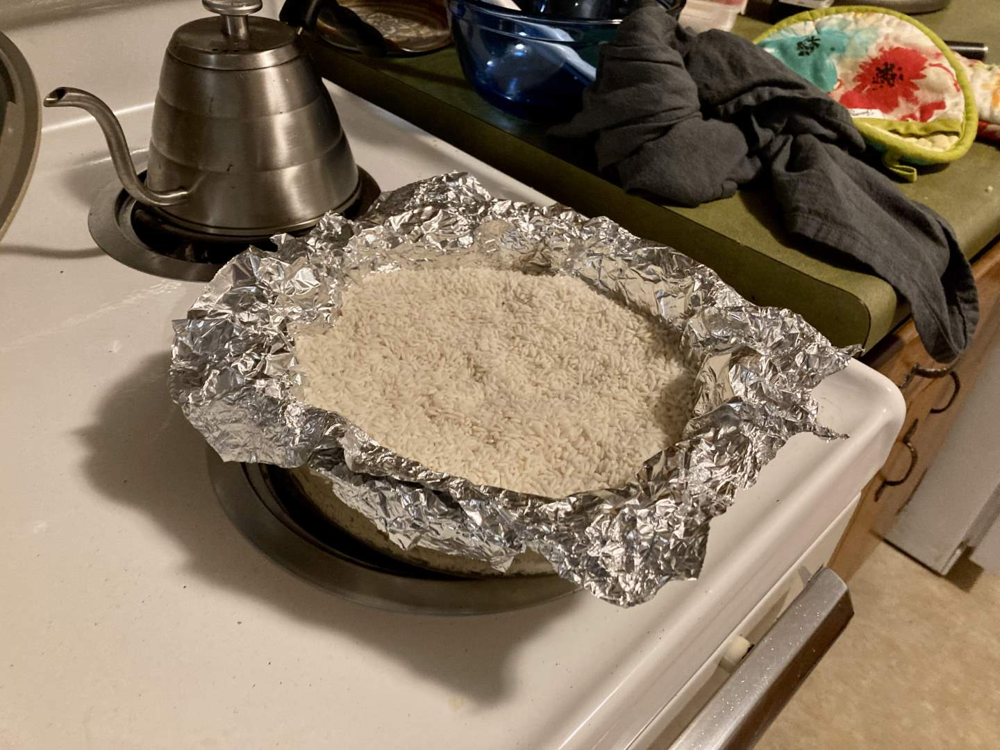
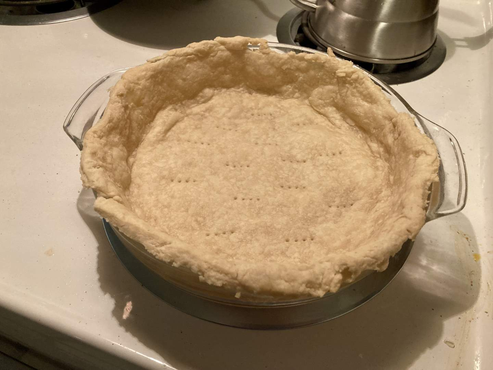
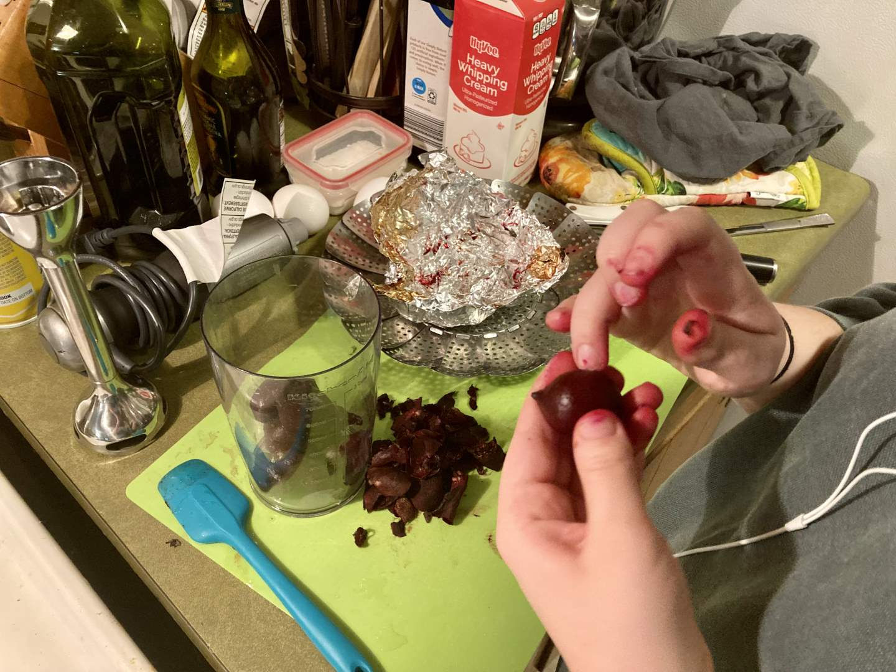
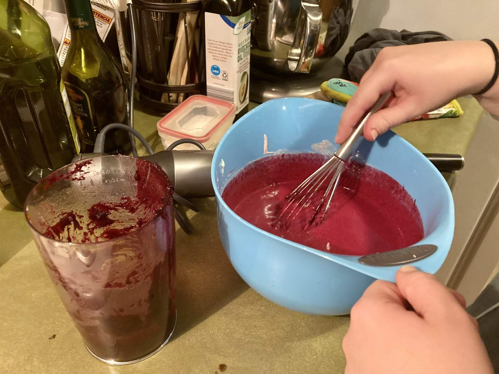
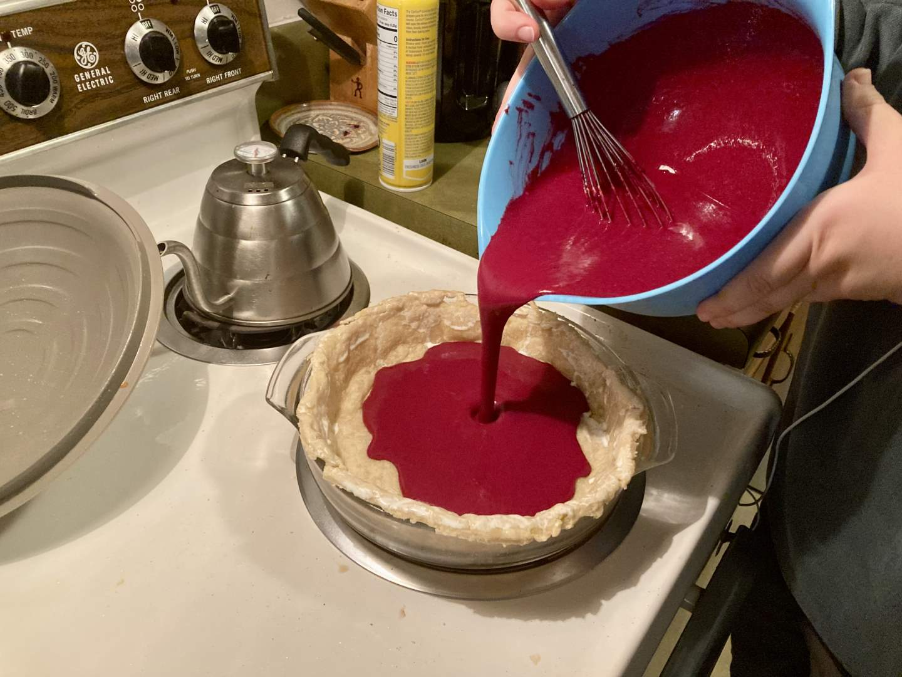
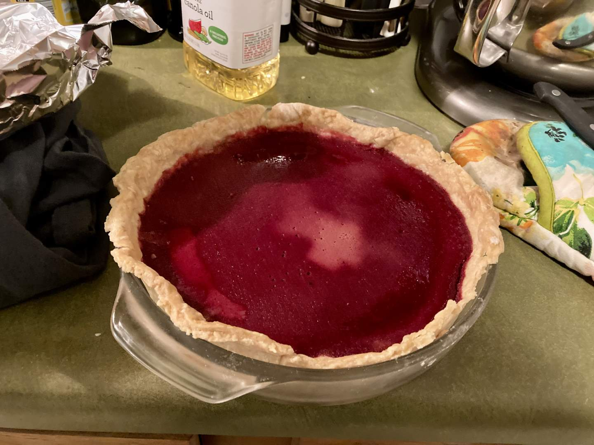
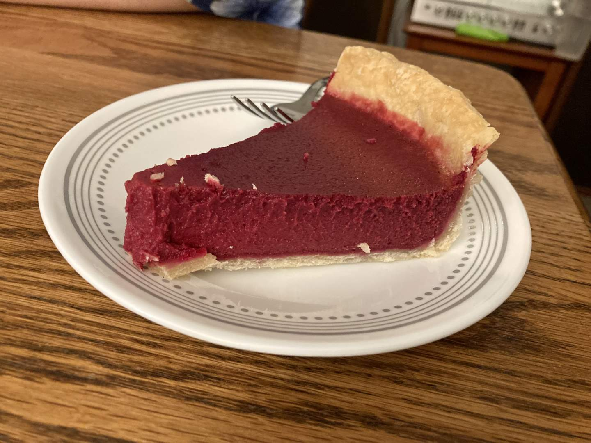

Pie 20: Beet
2023-11-09Filling recipe is “Sweet Beet Pie” from Sister Pie by Lisa Ludwinski. (text of recipe)
Crust recipe from Tastes Better From Scratch.
Taste:
Difficulty:
Vibes:
Suggested pairing: sweet potato fajitas, fruit salad
Last Saturday Katie Beth and I decided to visit the Columbia Farmers Market for the first time since moving. We dedicated ourselves to picking up something interesting for our next pie. The pavilion was stocked with a surprising variety of fruits and vegetables for November. Several vendors were offering beets, so we purchased a bunch and found a recipe. We also watched a group launch a pumpkin with a trebuchet.
Four days later, we decided to make the pie. I defrosted and rolled out the extra crust Katie Beth made for the plum pie then blind-baked it. Happily, the crust had not suffered from being frozen and turned out very well.
 After lopping off the tops and tips of the beets and washing off the dirt, KB packaged them in foil and roasted them until they were about as tender as a baked potato. After cooling she removed the skin from each root, then blended them smooth and mixed in butter, sugar, eggs, cream, and yogurt. The resulting pie filling was a vibrant red-violet, the color of a mixed-berry smoothie.
 After brushing some cream onto the crust and pouring the filling into the crust, we baked the pie for around an hour. We planned to eat with friends the following evening, so cooling and refrigeration instead of slicing and tasting were on the menu.
The next day I was pleased at the clean slices the beet pie produced. The color had deepened in baking and cooling and was uniform all the way down through the pie. Overnight a pale blotch had developed on the surface of the pie that was not present when I took it out of the oven. We didn’t allow this cosmetic factor to detract from our enjoyment of the weirdly delicious slices. The flavor was certainly earthy, though not from any actual dirt in the pie. The crust was once again excellent (thanks Katie Beth). We would make beet pie again.
